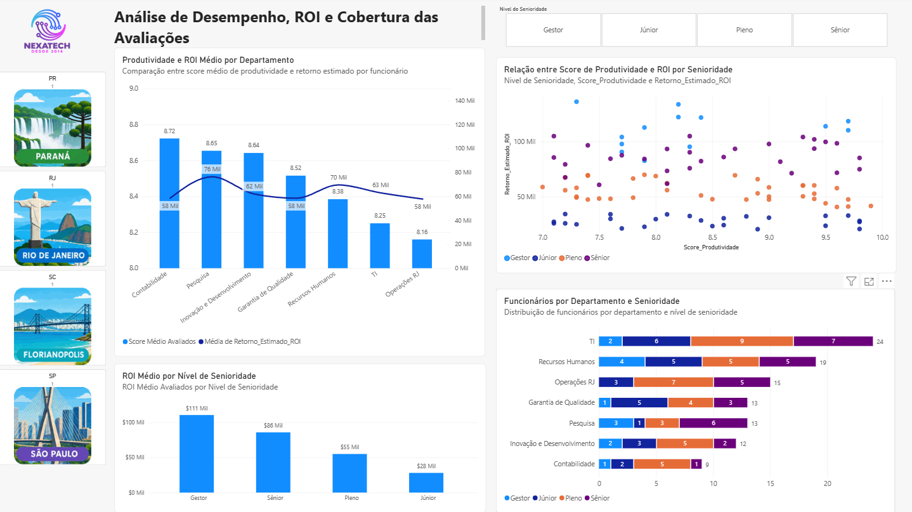

End-to-End Data Analytics
Employee Analytics & Business Performance
Collaborative academic project developed at TOTI, analyzing employee performance, departmental ROI, productivity and organizational costs. The workflow included database enrichment with synthetic data, SQL queries, data processing in Python and the development of interactive Power BI dashboards.
My contribution: Analysis of departmental ROI and employee performance by seniority level, identifying potential improvement opportunities and presenting business insights.
View Project on GitHub ↗